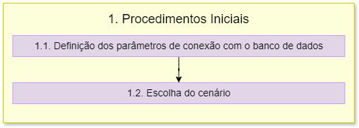

1. Conexão com o Banco de Dados
Aviso
Atualmente, o aplicativo funciona com o banco na nuvem. Contudo, caso o usuário deseje utilizar um banco local, a última versão do banco é a versão 8 e deve ser utilizada para execução com a última atualização da aplicação. Isto é importante para que haja compatibilidade e evitar erros de execução difíceis de serem compreendidos pelo usuário.
O fluxograma de processos desta etapa é apresentado a seguir:
1.1 Definição dos parâmetros de conexão com o BDG
A função parametros_padrao_bd define os parâmetros de conexão padrão com o banco de dados.
host |
localhost |
nome |
bdg_prh_rpb |
usuario |
postgres |
senha |
cobrape |
porta |
5432 |
A variável parametros_conexao cria um dicionário que contém parâmetros de conexão padrão (host, nome do banco, usuário, senha, porta e schema) com o banco de dados.
1.1.1 Verificação da conexão PostGIS
A função verifica_parametros_bd apresenta os parâmetros de conexão com o banco de dados e possibilita ao usuário decidir se mantém os parâmetros de conexão padrão ou se deseja inserir parâmetros personalizados.
A variável verifica_postgis utiliza a classe QMessageBox para verificar se o usuário deseja continuar com os parâmetros de conexão padrão ou se deseja alterar os parâmetros de entrada.
Nota
A classe QMessageBox faz parte do framework Qt e é usada para criar e gerenciar caixas de diálogo que exibem mensagens para o usuário, podendo ser utilizadas para fornecer informações, pedir confirmação ou solicitar entrada do usuário.
Se a resposta do usuário for sim, a leitura do código será continuada e serão utilizados os parâmetros padrão.
Se a resposta for não, o código segue para a função patrametros_personalizados_bd.
1.1.2. Definição dos parâmetros personalizados
A função parametros_personalizados_bd utiliza a classe QInputDialog para obter novos valores para os parâmetros de conexão. A classe é utilizada para cada parâmetro de conexão (host, nome do banco, usuário, senha, porta e schema) e, portanto, o processo é repetido seis vezes.
O código faz a verificação se algum campo ficou vazio. Em casos que o usuário deixe os campos vazios, será utilizado os parâmetros de conexão padrão.
Depois de inserir os valores, é chamada a função verifica_parametros_bd onde são atualizados os parâmetros de conexão.
Nota
A classe QInputDialog faz parte do framework Qt e é utilizada para criar caixas de diálogo que solicitam entrada do usuário. Essas caixas de diálogo podem ser usadas para coletar informações como texto, números ou opções de uma lista.
1.2. Escolha do cenário
Os cenários foram criados nos Schemas do banco de dados. Os Schemas estão divididos por:
Basemap: onde contém as ottobacias e ottotrechos.
Cenário 0: vazão incremental 1 e captação 0 para todas as ottobacias.
Cenário 1: 10 ottobacias com captação 1 distribuídas pela bacia.
Cenário 2: algumas ottobacias estão com valores diferentes para realizar testes das classificações do ISR.
Os resultados são salvos no próprio Schema de cada cenário, em forma de Visualizações (VIEWS). Estes cenários criados são apenas para fins de testes.
A função definir_cenario exibe inicialmente uma caixa de mensagem perguntando ao usuário se ele deseja alterar o cenário atual. Caso a resposta for Sim, será solicitado que ele insira o nome de um novo cenário. Assim o novo_cenario* substituirá o Schema atual no dicionário de parâmetros de conexão.